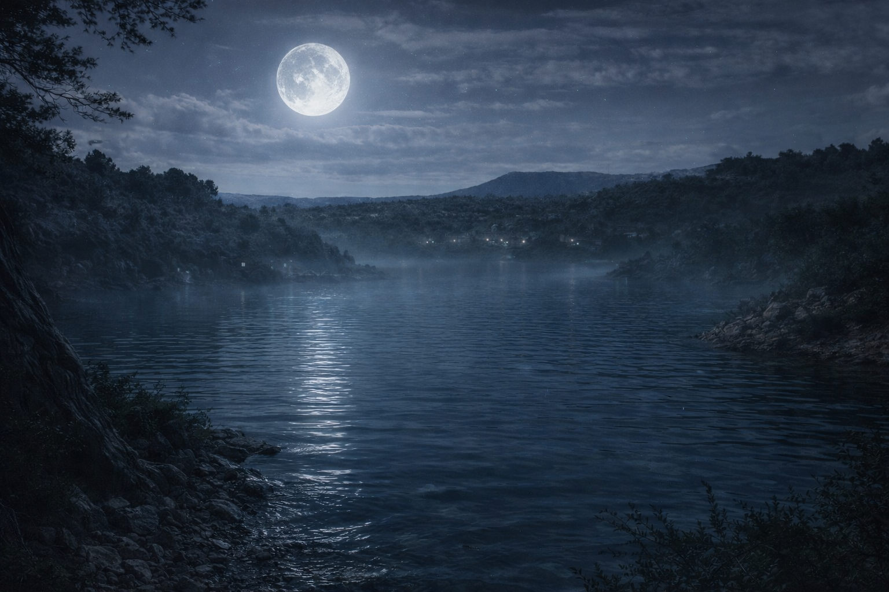

/*Para que hayan varias respuestas y sea menos obvio*/Draugr
Ritual
Esperanza
Almansa
Aguas
El susurro de las aguas
Dificultad: Media
Número de Jugadores: 4-5
Duración aproximada: 20 minutos
"Dicen que, cuando la luna llena se refleja en las aguas del pantano de Almansa, el pasado despierta.. Susurros, luces y sombras emergen cada noche, reclamando ser escuchados. Un mapa olvidado y el diario de un viejo guardián han llegado a vuestras manos. Ahora, el pantano os llama… y no todos regresan de él."